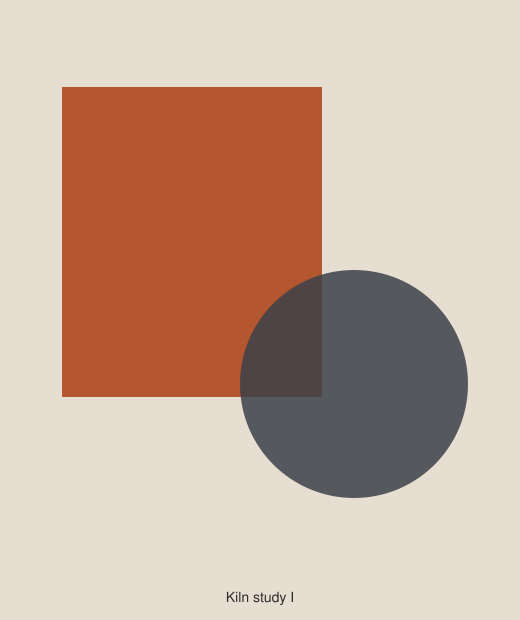
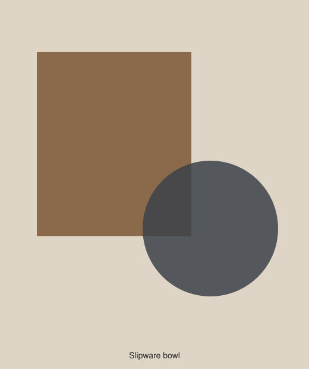
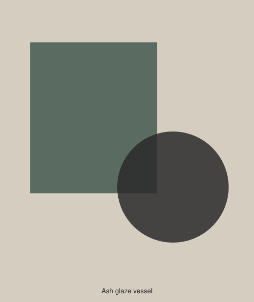
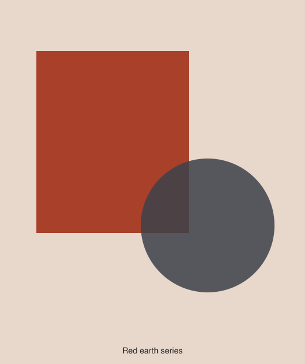
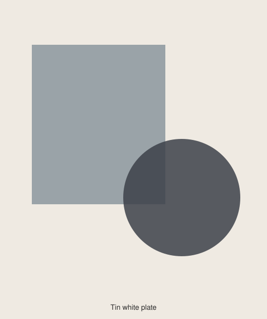
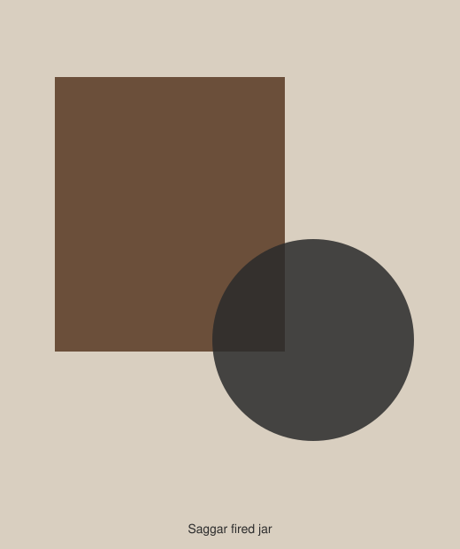
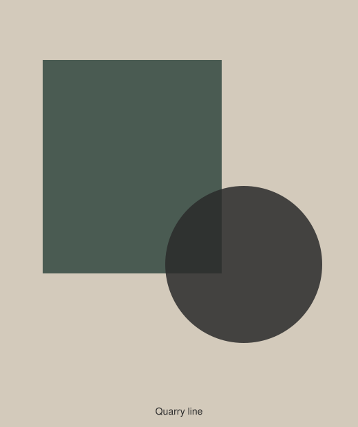
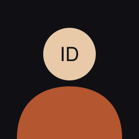

Sold
Kiln Study I Stoneware, wood-fired
£680
Kilnworks Gallery
Twenty-eight works in clay · 4 September to 18 October 2026
Eight works are hung in gallery two. The remaining twenty are in the catalogue below and can be brought out on request.

Sold
Kiln Study I Stoneware, wood-fired
£680

Available
Slipware Bowl Earthenware, slip-trailed
£240

Reserved
Ash Glaze Vessel Stoneware, ash glaze
£1,150

Available
Red Earth VII Terracotta, burnished
£395

Available
Tin White Plate Earthenware, tin glaze
£185

Sold
Saggar Fired Jar Stoneware, saggar fired
£840
Available
Brick Field Reclaimed clay, unglazed
£520

Available
Quarry Line Stoneware, quarry slip
£460
All twenty-eight works. Ask at the desk to see anything not on the wall.
Ground and Fired — complete list

Every potter in this room fires with something that was already here: clay dug from the quarry two miles away, ash from the sawmill, slip made from the silt the river leaves on the flood meadow each spring.
That is not a romantic position. It is a practical one, and it shows in the work: these glazes could not have been made anywhere else, and in forty years, when the quarry is a lake, they will not be makeable here either.
Ines Delgado, curator